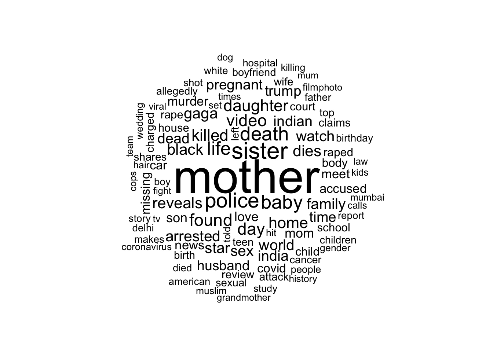

# A tibble: 1 × 3
mean_length min_length max_length
<dbl> <int> <int>
1 71.0 1 256Text Analysis
This is a text analysis I performed as part of a project for my data science 2 class.
Analysis of Headlines Relating to Women
The Data
What are we exploring?
The data I will be using and analyzing includes all headlines from the top 50 news publications in the U.S., India, U.K., and South Africa that include keywords related to women (“women OR woman OR girl OR female OR lady OR ladies OR she OR her OR herself OR aunt OR grandmother OR mother OR sister”). These headlines are taken from the years 2010 through 2020, so they are slightly out of date. The world has changed since then, and so has the news and what they report on. For now, I will be analyzing the text within these headlines. Excluding words like “women”, “girl”, and more, what are the most common words used in headlines relating to women? What kind of sentiments do these headlines and therefore articles have?
I believe that by finding the most common words and the sentiments in these headlines, we can get a general idea of what is being reported about women and girls in the world. Do they report about women’s successes, women’s suffering, or maybe something in between?
Analysis
Length of Headlines and Punctuation
To begin the analysis I want to start with a general look the structure of the headlines.
From this output, we can see the minimum, maximum, and mean length of headlines that are tagged with words relating to women. The mean length is 71 characters long which is about ten words total. This can be seen in the next output that prints a few of the questions that are asked in these headlines.
# A tibble: 15,383 × 1
question
<chr>
1 Should female cricketers play with shorter boundaries?
2 Is Africa becoming a female sex tourism destination?
3 Have you seen this missing Brackenfell woman?
4 WATCH: Why are women attracted to disturbed Joe Goldberg types?
5 Are women rising in senior management in SA?
# ℹ 15,378 more rowsCommon Words
I also want to see what the most common words are that appear in headlines related to women in general. The words that appear most in these headlines is visualized below in the bar plot and the word cloud below.

From the top ten, words like “mother”, “sister”, “baby”, and “daughter” hold themes of family and motherhood. From this, we can infer that women are reported on in a more familial role or in relation to a family member. For example, one headline reads: “Bake Off winner John Whaite’s sister found after going missing.” As articles report more on women in familial roles, this may result in an enforcement of traditional gender roles for women: being more associated with the family and motherhood.
The inclusion of “police” and “death” is also very interesting. What contexts are these words being used in? Death is more obviously a negative word but what about police? Depending on the context, police could be positive or negative, especially if you consider the time these articles were drawn from (2010-2020).

From the word cloud, we seem to see a lot more negative words than positive. Words like murder, killed, death, and more stick out among more positive or neutral words like mother, life, and home. Although these negative words may not be as commonly used as those in the top ten, their large presence in the word cloud is slightly alarming. This leads me to question the proportion of negative words compared to positive in these headlines, bringing us to our sentiment analysis.
Sentiment Analysis
In order to analyze and compare the negative words to the positive in headlines tagged with women, I used the bing sentiments lexicon. The bing lexicon only includes two sentiments: negative and positive. I joined these sentiments with the headlines tidy data to create the bar plot below.
The graph illustrates the top ten common words from each sentiment. The comparison of the words included in these top tens is quite jarring. In the negative list, there are more sensitive and disturbing words like killed, murder, and attacked. This implies that when news articles related to women are more negative, they are typically reporting on crimes and attacks against or committed by women (most likely the former). In comparison, the most common words with positive sentiment hold less weight than the more common negative words. For example, words like “beauty” and “beautiful” do not typically hold a lot of substance or meaning beyond surface level appearance of objects, places, or people.
![This is a column plot faceted into two graphs by negative and positive sentiment. On the x-axis is the nymber of times the word has appeared in the headlines dataset. For the negative sentiment plot, the x-axis ranges from 0 to 8,000 times. For the positive sentiment plot, the x-axis ranges from 0 to 5,000 times. On the y-axis is word included in the headlines. The negative sentiment plot included the words death, killed, dies, dead, murder, raped, rape, attack, cancer, and died on the y-axis. The positive sentiment plot included the words trump, love, top, win, fans, free, wins, support, beauty, and beautiful on the y-axis. For each plot, the words were arranged from most frequent at the top to least frequent at the bottom. The orders in which the words were written above are orders they appear in on the plot, from most frequent to least frequent. The appearance of this plot shows how frequently each word appears in headlines relating to women. It also displays how negative words appear more in the dataset.](mp1_files/figure-html/unnamed-chunk-10-1.png)
It is also important to note how the most common positive word: “trump.” In the bing lexicon, “trump” is most likely a verb. However, since this data is from the years 2010 through 2020, we can assume “trump” in these headlines refers to Donald Trump. If we remove “trump” from this list, the word “helped” is now included with a total of 1,152 appearances.
From the plot, you can also see that there are a lot more words with negative sentiments than positive, with the negative words’ range peaking around 8,000 words vs. 5,000 for words with a positive sentiment. From this observation, I decided to calculate and compare the proportion of negative and positive words included in the headlines. From the table below, it is suprising to see how for every one positive word in the data, there are three negative words. This suggests that most of the articles from these headlines relating to women are negative in nature. Although single word analysis does not tell us the full story (for example, words with a negative sentiment may be set in a positive headline), this proportion of negative words is still quite alarming and raises important questions on what is being reported on regarding women.
| Number of Occurrences | Proportion | |
| Positive | 104,764 | 0.33 |
| Negative | 212,979 | 0.67 |
What about men?
I am also curious about what the general sentiment of headlines related to women that also include the words “men” or “man” in them. From the outputted tibble below, it is clear that the most common words in these headlines are negative, and like in the previous sentiment analysis, quite sensitive and disturbing. Since these are the kind of words included in articles tagged with both men and women, one can assume that these acts of violence are being committed against one of the genders by the other. It can be inferred in today’s context that men are the perpetrators of these acts. What does that say about how men are treating women and how news sources are reporting on it?
# A tibble: 1,299 × 3
word sentiment n
<chr> <chr> <int>
1 murder negative 263
2 death negative 240
3 killed negative 231
4 raped negative 220
5 rape negative 207
6 dead negative 165
7 killing negative 160
8 raping negative 137
9 attack negative 113
10 love positive 101
# ℹ 1,289 more rowsConclusion
From this exploration and text analysis of headlines tagged with words relating to women, I am generally disappointed. I found that a majority of the words in the text have negative sentiments (particularly when the headlines include “men” or “man”), most with quite disturbing connotations. However, this analysis is not exempt from limitations. I used a single text analysis to examine the sentiment of the words included in these headlines which removes a lot of the context within the headline it self. It may be interesting to further explore how these words fit into their own headline context by using bigrams and/or n-grams. The headlines in this data are also from 2010-2020, making them a little outdated with a fast changing world.